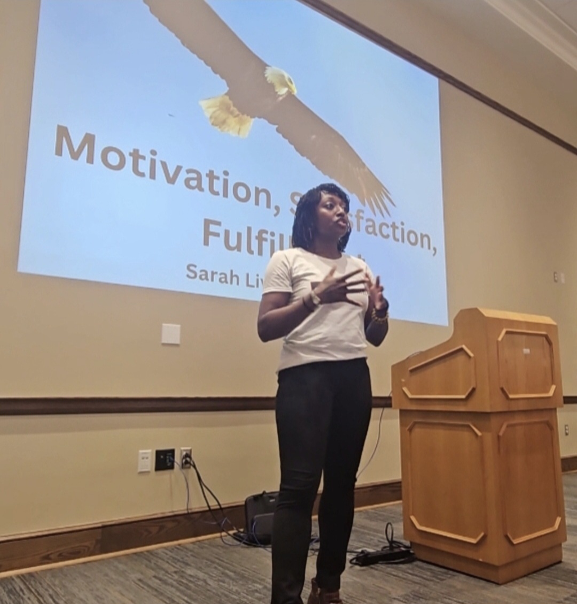
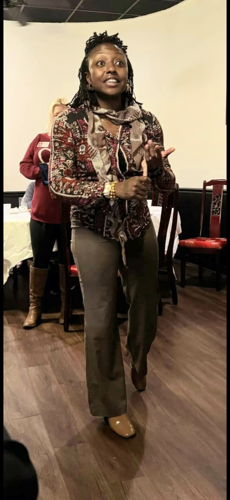
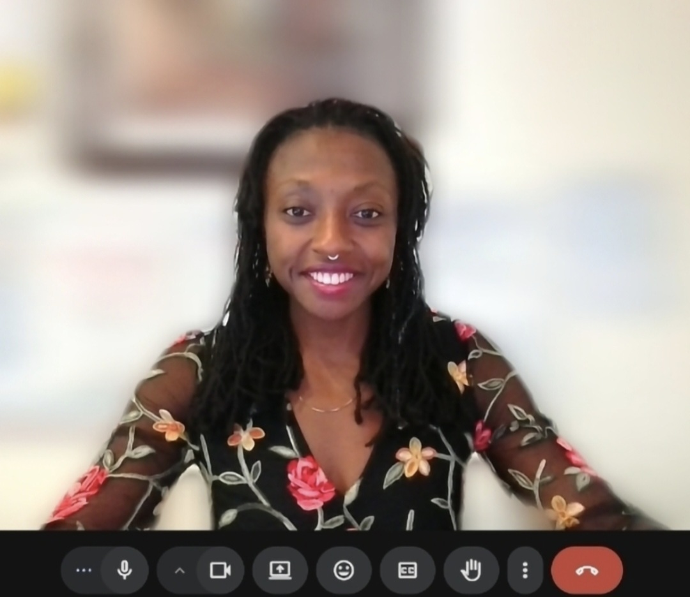
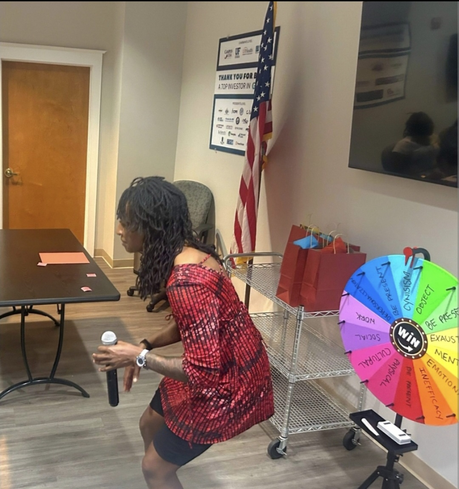

Sarah Livingstone, MSW
Founder & CEO of ARE U Motivated — facilitator, educator, and the person behind The Connection Hour.

Sarah Livingstone, MSW
Sarah Livingstone is the founder and CEO of ARE U Motivated. With more than 20 years of social work experience, her career has included working with youth, families, organizations, and the community — helping people build the practical skills needed to navigate real-life demands in their relationships, their work, and their everyday lives. She holds a Master of Social Work with a concentration in Management & Leadership, a Bachelor of Science in Family, Youth and Community Sciences, and an Associate of Science in Elementary Education.
Through The Connection Hour, Sarah facilitates guided, discussion-based sessions across two tracks — one for workplaces and adult groups, and one for youth and the people who support them.
For workplaces and small groups, Sarah facilitates sessions that give employees practical skills for managing the real demands of work and life — including communication, boundaries, conflict, coping, and resilience. Whether participants are navigating early signs of stress or already feeling the weight of burnout, The Connection Hour gives them tools they can begin using immediately. She has provided training and facilitation for organizations including the University of Florida's William & Grace Dial Center for Speech and Communication Studies, the Greater Gainesville Chamber of Commerce, The Children's Trust of Alachua County, the Florida Public Relations Association Gainesville Chapter, The Founders Group, and Alachua County Child Abuse Prevention Task Force.
For youth and those who support them, Sarah has spent a significant part of her career working directly with young people and youth-serving organizations. Sessions are available for organizations serving youth in groups, or youth and parents/guardians together in a group setting. During her career, she worked with organizations including Partnership For Strong Families, Alachua County Public Schools, the Rutgers University TRIO Program, the Child Advocacy Center, O2B Kids!, Take Stock in Children of Florida, HOPE Worldwide, UF College of Education's Akwaaba Freedom School, 21st Century Community Learning Centers, and Trinity United Methodist Church.
Both tracks are grounded in the same practical, discussion-based approach — meeting people where they are and giving them skills they can use immediately.
Facilitating Real Conversations




Grounded in What Works
Sarah's work is grounded in social work principles that she brings into every Connection Hour session — not as theory, but as a practical lens for how people are seen and supported.
Strengths-Based
Focusing on existing abilities, resilience, and potential rather than deficits — because every person already has something to build from.
Person-in-Environment
Understanding that people exist within families, communities, and systems that shape their experiences and choices.
Developmental Awareness
Tailoring discussions to reflect the emotional, cognitive, and social realities of participants — meeting people where they are.
Empathy & Nonjudgment
Creating spaces where people feel safe to reflect, share, and explore new perspectives without fear of being judged.
Skill Development
Emphasizing practical, repeatable skills rather than one-time insights — because real change happens through practice.
Community Partnerships
Bringing The Connection Hour to organizations wherever people gather — virtually, across communities and settings.
Ready to Bring The Connection Hour to Your Organization?
Start with a 3-Session Pilot Experience. Available for youth organizations, schools, workplaces, nonprofits, and small groups. Virtual.
Book a Conversation